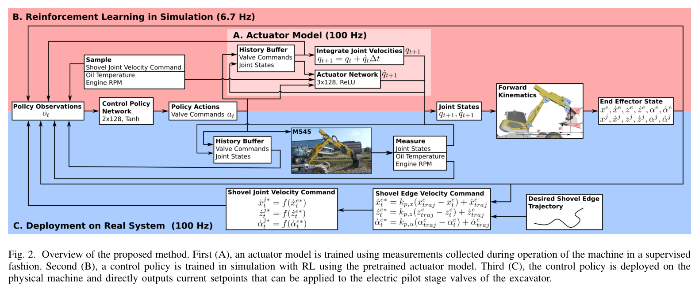
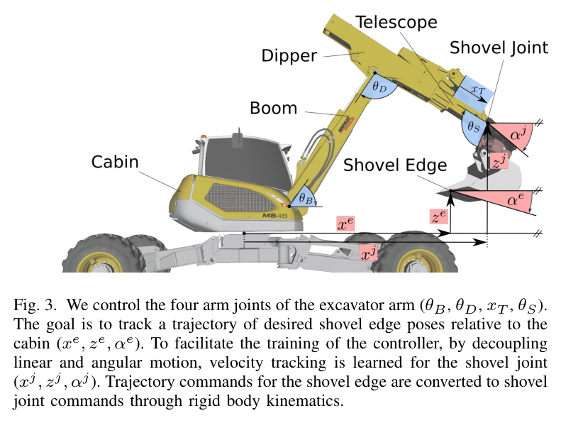
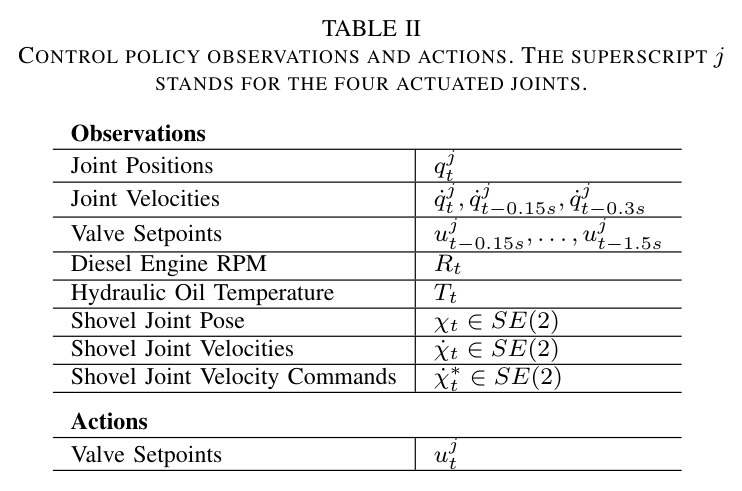
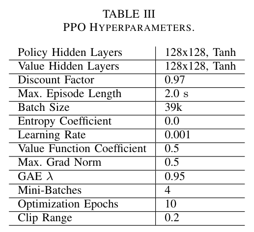
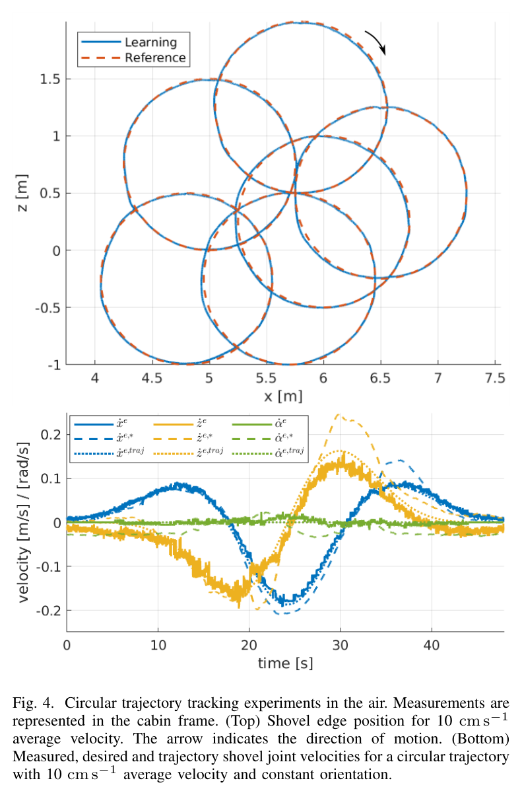
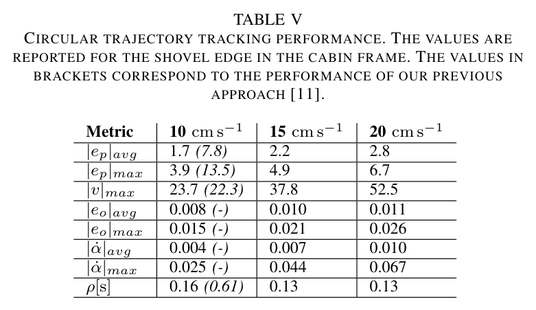
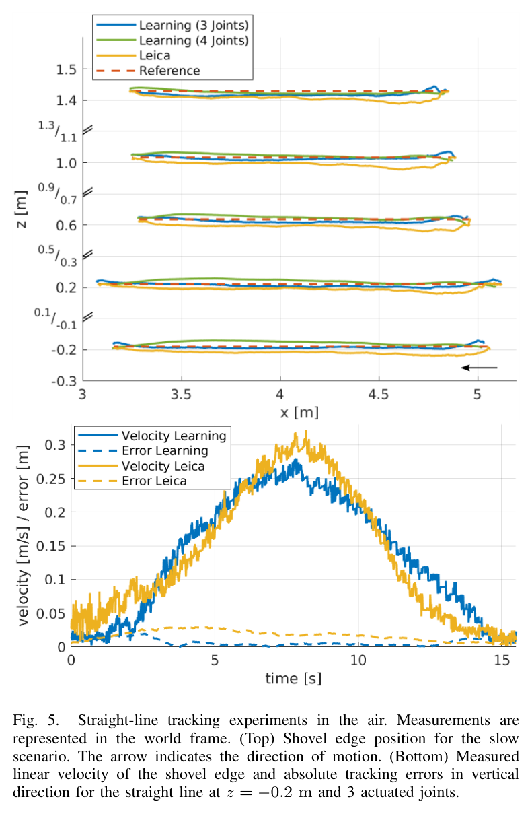
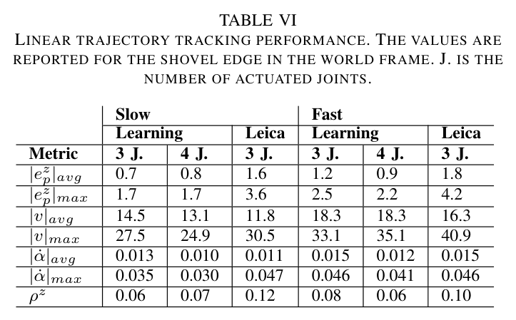
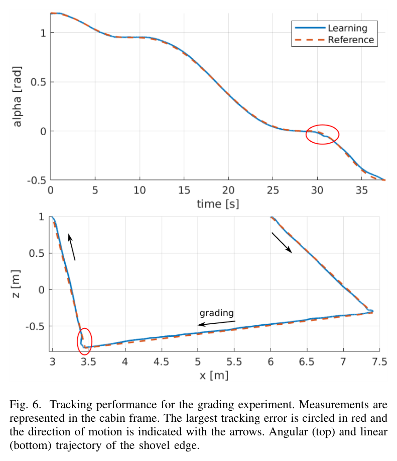

01 / THE PROBLEM
굴착기의 정밀 제어가 어려운 이유
밸브에 같은 명령을 보내도 굴착기 팔이 언제, 얼마나 움직일지는 단순하지 않다.
파일럿단의 지연과 데드존, 여러 관절이 펌프를 공유하면서 생기는 결합, 기체별 편차, 실린더 운동과 관절 운동 사이의 비선형성이 겹친다. 모델 기반 제어에는 정확한 동역학 모델이 필요하고, PID 접근에서는 기체에 맞춘 수동 튜닝이 부담이 된다.
데이터 기반 제어는 이 복잡한 응답을 학습하려는 시도다. 하지만 신경망을 넣는 것만으로 모델링과 튜닝 문제가 모두 사라지는 것은 아니다.
| 접근 | 남아 있던 제약 |
|---|---|
| Song & Koivo, 1995 토크 예측 신경망 + PID | 시뮬레이션 검증에 머물렀고 고정밀 밸브가 필요했다. |
| Cannon & Singh, 2000 실린더별 속도 신경망 | 실린더와 관절 사이의 변환을 별도로 알아야 했다. |
| Park, 2017 온라인 역모델 학습 | 명령 필터가 필요했고 오차는 수십 cm 수준이었다. |
| Nurmi, 2018 밸브→속도 피드포워드 신경망 | PID의 수동 튜닝이 여전히 필요했다. |
| Egli, 2020 학습 기반 위치 제어 | 자세 제어가 없고 오프셋이 필요했다. 비교된 원 궤적 평균 오차는 7.8 cm였다. |
이번 연구가 바꾼 것
속도 추종을 중심으로 정책을 구성하고 버킷 자세 제어를 추가했다. 관절 상태·링크 길이·전기 파일럿 밸브를 바탕으로 적용 가능한 일반적 절차를 제안하고, 실차 실험과 상용 시스템 비교로 성능을 평가했다. 이는 여러 기체에 접근법을 적용하려는 목표이며, 하나의 학습 정책이 모든 굴착기에 그대로 통한다는 뜻은 아니다.
02 / THE METHOD
실차에서 응답을 배우고,
시뮬레이션에서 제어를 익힌다
핵심은 두 번의 학습이다. 먼저 실제 굴착기가 밸브 명령에 어떻게 반응하는지 신경망으로 예측한다. 다음으로 이 액추에이터 모델을 포함한 시뮬레이션에서 목표 속도를 따라가는 정책을 학습한다.
액추에이터 모델
실차의 상태와 명령 이력으로 다음 관절 속도를 예측한다.
100분 데이터 · 100 Hz 수집PPO 정책 학습
학습한 모델 위에서 선속도와 버킷 각속도 추종을 익힌다.
6.7 Hz · 학습 약 2시간실차 제어
궤적 오차를 목표 속도로 바꾸고 정책이 밸브 명령을 만든다.
M545 · 100 Hz 실행
액추에이터 모델: 유압의 기억을 입력에 담다
모델 구조는 전작을 따른다. 관절 위치, 최근 0.1초의 속도 이력, 최근 0.99초의 밸브 명령 이력, 엔진 rpm과 오일 온도를 입력받아 0.01초 뒤의 관절 속도를 예측한다. 현재 명령만으로는 설명하기 어려운 유압의 응답을 과거 상태와 명령으로 포착하는 방식이다.
수집 신호는 작동 범위 전체를 훑는 램프에 처프—주파수가 변하는 사인 신호—를 겹치는 방식이다. 전체 100분 중 절반은 처프를 제외했다. 제공된 요약에 따르면 처프만 사용하거나 램프만 사용했을 때는 실차 성능이 좋지 않았다.
데이터의 양만큼 중요한 것은
어떤 움직임을 경험하게 했는가다.
선속도와 각속도를 나누는 기구학
제어 대상은 붐 θB, 디퍼 θD, 텔레스코프 xT, 셔블 θS의 네 관절이다. 셔블 관절점의 선속도는 셔블 자체의 회전에 영향을 받지 않는다. 이를 이용해 선속도 추종과 각속도 추종을 분리하고, 셔블 관절은 각속도를 담당하도록 구성한다. 셔블 날 기준의 명령은 강체 기구학으로 관절점 기준 명령으로 변환한다.

03 / TRAINING & DEPLOYMENT
정책의 성능은 학습 조건에서도 갈린다
정책은 현재 상태뿐 아니라 과거의 속도와 명령을 관측한다. 학습에는 잡음과 행동 스케일 변화를 넣어 모델과 실차 사이의 차이에 대비한다. 짧은 에피소드는 모델 오차가 시간에 따라 누적되는 문제를 줄이기 위한 선택이다.
- 관측과 행동
- 관절 위치, 0.15·0.3초의 속도 이력, 0.15~1.5초의 명령 이력, rpm·온도, 셔블 관절 자세·속도·목표 속도를 관측한다. 출력은 밸브 명령 4개다.
- 목표 속도
- 선속도는 임의 방향의 0~0.5 m/s, 각속도는 ±0.3 rad/s다. 목표는 에피소드 중 서서히 변한다.
- 에피소드와 종료
- 에피소드는 2초다. 자기 충돌 시 보상 0으로 종료하며, 4관절 학습에서는 관절 한계에 도달해도 종료한다.
- 무작위화
- 관측 잡음을 주입하고 행동에 ±10% 무작위 스케일을 적용한다. 행동 스케일은 에피소드 내에서 고정되며 정책에는 알려주지 않는다.


요약에 기재된 잡음 크기: 위치 0.02, 속도 0.04~0.05, rpm 25, 자세 0.01, 속도 0.05. 각 항목의 단위와 세부 적용 대상은 재현 시 원문 관측 정의와 대조해야 한다.
보상: 추종 정확도와 명령의 부드러움
선속도와 각속도의 오차가 작을수록 보상을 주고, 연속된 밸브 명령의 변화에는 벌점을 준다. 커리큘럼 계수는 학습이 진행될수록 추종과 명령 변화에 대한 요구를 높인다.
식 1 · 정책 보상
v와 α̇는 셔블 관절점의 선속도와 각속도이며, *는 목표값이다. a는 네 밸브의 명령 벡터다. fc,1과 fc,2는 각각 100회·200회 반복 동안 0.1에서 1.0으로 증가한다.
낮은 주기로 학습하고, 높은 주기로 실행하다
이 실험에서는 tanh가 ReLU보다 실차에서 안정적이었다. 또 정책의 학습 주기를 6.7 Hz로 낮추고 배포 시에는 100 Hz로 실행했을 때 명령이 덜 공격적이었고 성능이 좋아졌다. 정책 학습에는 약 2시간이 걸렸다. 이 설정은 해당 시스템에서 얻은 실증 결과이며, 다른 기체의 최적 주기까지 정해주지는 않는다.
식 2 · 배포 시 바깥 비례 루프
z와 버킷 자세 α에도 같은 형태를 적용한다. 비례 이득 kp = 3.0. 목표 궤적의 속도에 위치·자세 오차의 보정분을 더해 정책에 전달한다.
04 / EXPERIMENTAL EVIDENCE
실차에서 확인한 세 가지 결과
실험은 공중 원 궤적, 공중 직선, 지면을 고르는 정지작업으로 이어진다. 각 실험은 평가 조건과 오차의 의미가 다르므로, 숫자는 해당 조건과 함께 읽어야 한다.
공중 원 궤적: 전작 대비 오차 감소
지름 1.5 m의 원을 버킷 자세를 고정한 채 추종했다. 10 cm/s 조건의 평균 오차는 전작 7.8 cm에서 1.7 cm로 줄었다. 속도가 높아질수록 평균·최대 오차도 커졌다.

| 평균 속도 | 평균 오차 | 최대 오차 | ρ* |
|---|---|---|---|
| 10 cm/s | 1.7 cm (7.8) | 3.9 cm (13.5) | 0.16 (0.61) |
| 15 cm/s | 2.2 cm | 4.9 cm | 0.13 |
| 20 cm/s | 2.8 cm | 6.7 cm | 0.13 |

공중 직선: 상용 시스템과의 비교
다섯 높이에서 직선 추종을 수행하고 학습 제어기와 Leica iCON을 비교했다. 비교 대상은 공급사 전문가가 해당 기체에 설치·튜닝한 성숙한 시제품이었다. Leica는 3관절을 제어하고 디퍼를 수동으로 조작했으며, 학습 제어기는 3관절·4관절 구성을 평가했다.

| 조건·지표 | 학습 3관절 | 학습 4관절 | Leica |
|---|---|---|---|
| 느림 · z 평균 오차 | 0.7 cm | 0.8 cm | 1.6 cm |
| 빠름 · z 평균 오차 | 1.2 cm | 0.9 cm | 1.8 cm |
| 빠름 · ρz* | 0.08 | 0.06 | 0.10 |
비교가 말해주는 범위
학습 제어기는 이 직선 실험의 z 방향 평균 오차에서 더 좋은 결과를 보였다. Leica의 x 방향·자세 기준을 알 수 없어 해당 항목은 비교하지 않았다. 따라서 결과를 모든 작업이나 전체 제어 성능의 우위로 확장해서는 안 된다.

정지작업: 학습하지 않은 접촉에 대한 대응
흙 접촉과 외란을 학습에 포함하지 않은 정책으로 평균 20 cm/s의 정지작업을 수행했다. 지면을 고르는 구간의 평균 오차는 2.0 cm였다. 이는 제한된 접촉 조건에서의 일반화 가능성을 보여준다.

| 평가 구간 | 평균 오차 | 최대 오차 | ρ* |
|---|---|---|---|
| 정지작업 구간 | 2.0 cm | 3.4 cm | 0.08 |
| 전체 경로 | 2.2 cm | 6.2 cm | 0.15 |
* ρ와 ρz는 제공된 요약에 정의가 없어 기호와 수치를 그대로 보존했다. 지표의 의미·정규화 방식은 원문에서 확인해야 하며, 이 글의 해석은 명시된 거리 오차를 중심으로 한다.
05 / BOUNDARIES
얕은 접촉의 성공과 깊은 굴착 사이
정지작업 실험은 흙과 접촉해도 학습 정책이 작동할 수 있음을 보여준다. 다만 작은 외란에 대한 대응과 큰 굴착 부하를 견디는 능력은 별도로 검증해야 한다.
- 운동 범위캐빈 선회는 제외됐다. 검증 대상은 굴착기 팔의 평면 운동이다.
- 접촉 범위학습에 흙 접촉 모델이 없고, 실험은 가벼운 정지작업에 한정된다. 깊은 굴착의 성능은 확인되지 않았다.
- 부하 관측저자들은 굴착 중 데이터와 압력 기반 부하 추정 입력, 흙–공구 상호작용 모델을 통한 외란 학습을 후속 과제로 제안한다.
- 시간 변화마모 등으로 액추에이터 특성이 변할 때의 재학습도 남은 과제다.
정밀한 제어 정책이 있어도,
작업에 맞는 궤적 설계는 여전히 필요하다.
06 / IMPLICATIONS FOR HR35
HR35에 가져갈 것은 숫자보다 검증 방식이다
이 연구는 HR35의 시험 설계를 구체화할 근거를 제공한다. 다만 다른 기체에서 얻은 성능 수치를 그대로 목표 달성의 근거로 삼을 수는 없다.
다음은 원 노트 작성자의 HR35 적용 의견을 정리한 것이다. 논문에서 직접 검증한 결과와 구분하며, 추가 확인이 필요한 해석은 조건부로 표현했다.
자극 신호의 조합을 시험 항목으로 만들기
램프와 처프의 혼합은 HR35 현장 시험 계획의 축 G를 설계할 때 유용한 출발점이다. 느린 램프와 처프를 포함한 구간, 처프가 없는 구간을 나누어 비교할 수 있다. 다만 이 연구의 절반 배분을 HR35의 최적 비율로 단정하지 말고, 주파수 대역과 진폭을 기체 응답에 맞춰 검증해야 한다.
상용 기준선은 같은 조건에서 비교하기
Leica의 1.6~1.8 cm는 공중 직선의 z 방향 평균 오차라는 구체적인 참조점이다. HR35 목표 정밀도를 정할 때도 평가 축, 속도, 궤적, 관절 구성과 평균·최대 오차를 함께 명시해야 비교가 의미를 갖는다.
긴 이력 창을 지연의 증거로 단정하지 않기
정책의 명령 이력은 최대 1.5초까지 포함한다. 이는 HR35 트윈과 실차의 명령→속도 응답을 비교할 시간 범위를 잡는 데 참고할 수 있다. 그러나 이력 창이 길다는 사실만으로 실제 유압 지연이 1초를 넘는다고 결론낼 수는 없다. 지연과 응답의 지속 시간은 실측으로 구분해야 한다.
20 Hz 센서 조건에 맞춰 입력을 다시 설계하기
원 노트가 전제한 HR35의 20 Hz 경사계 조건에서는 이력 창, 샘플링, 상태 추정 구성을 다시 검토해야 한다. 액추에이터 모델이 전작과 같다는 점은 기존 검토를 이어갈 근거지만, 이력 창을 줄여도 성능이 유지된다는 보장은 아니다. rpm과 오일 온도 기록도 함께 고려할 항목이다.
트렌칭에는 부하를 드러내는 관측을 검토하기
얕은 정지작업의 성공을 깊은 트렌칭으로 확장하려면 추가 검증이 필요하다. 압력 입력과 부하 추정은 저자의 후속 과제와도 맞닿은 유력한 방향이다. HR35에서 어떤 입력이 필요한지는 실제 굴착 데이터로 확인해야 한다.
TAKEAWAY
유압의 복잡함을 없애는 대신,
데이터로 다룰 수 있게 만들었다.
이 연구의 핵심은 실차의 응답을 모델에 담고, 속도·자세 추종 정책을 학습한 뒤, 원·직선·접촉 작업으로 확인한 일련의 절차에 있다. 다음 기체에 적용할 때 가장 먼저 물어야 할 것은 데이터가 필요한 운전 조건을 담고 있는지, 그리고 목표 작업을 같은 기준으로 평가할 수 있는지다. 1.7 cm라는 결과의 가치는 그 숫자를 만든 조건까지 함께 가져갈 때 살아난다.
출처와 읽기 안내
- 대상 논문. Pascal Egli and Marco Hutter. A General Approach for the Automation of Hydraulic Excavator Arms Using Reinforcement Learning. IEEE Robotics and Automation Letters, 7(2), 5679–5686, 2022. 학술지 DOI.
- 노트의 열람본. ETH Research Collection 프리프린트. 제공된 노트는 열람본을 “2021 채택”으로 표기하고, 정식 학술지 서지는 2022년으로 기재한다.
- 편집 범위. 이 글은 2026년 9월 25일 작성된 한국어 논문 요약 노트를 바탕으로 재구성했다. 실험 수치와 설정은 제공된 노트를 따르며, 원문 전체를 독립적으로 재검증한 보고서는 아니다. 선행연구에 대한 평가는 노트에 정리된 범위에서 소개했다.
- 그림·표. 원문 그림 2–6과 표 II·III·V·VI에 해당하는 제공 이미지를 보존했다. 이미지 출처는 대상 논문이며, 본문 표는 노트의 수치를 읽기 쉽게 재구성한 것이다. 풀쿼트와 마지막 공유 문장은 해설용 문장으로, 저자의 직접 인용이 아니다.